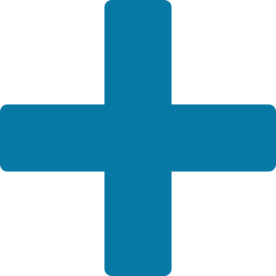

<app-navbar></app-navbar>
<app-init-table></app-init-table>
<div class="btn-button-container">
    <button routerLink="/create-initiative" type="submit" mat-raised-button class="initiative-button">
        
        <strong>Create an initiative</strong>
    </button>
</div>